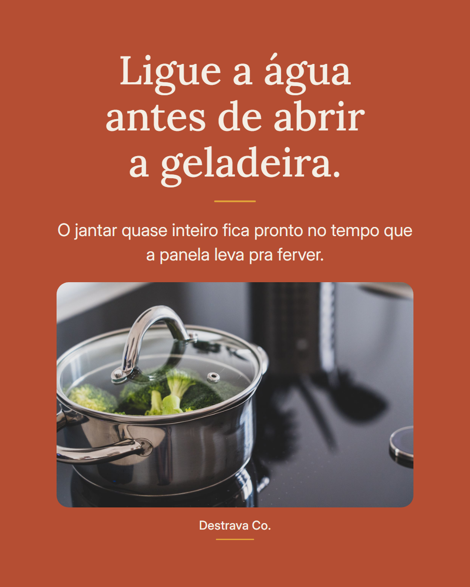
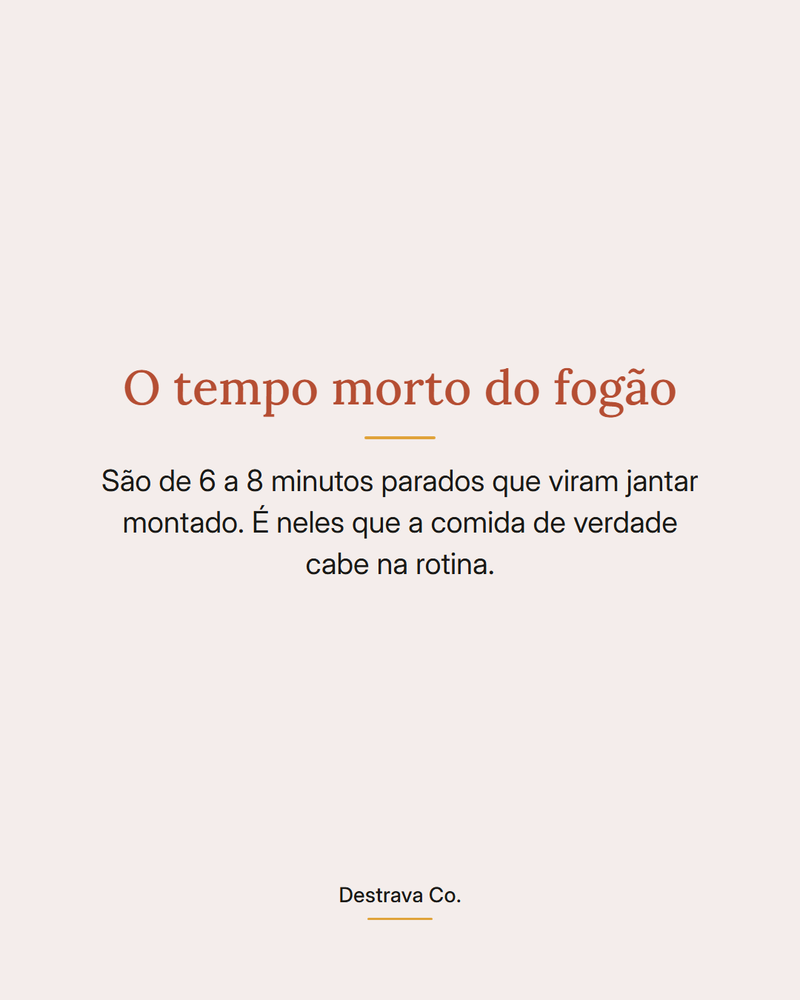
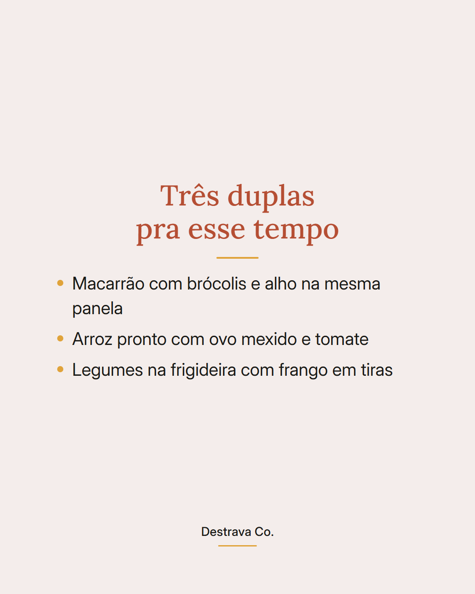
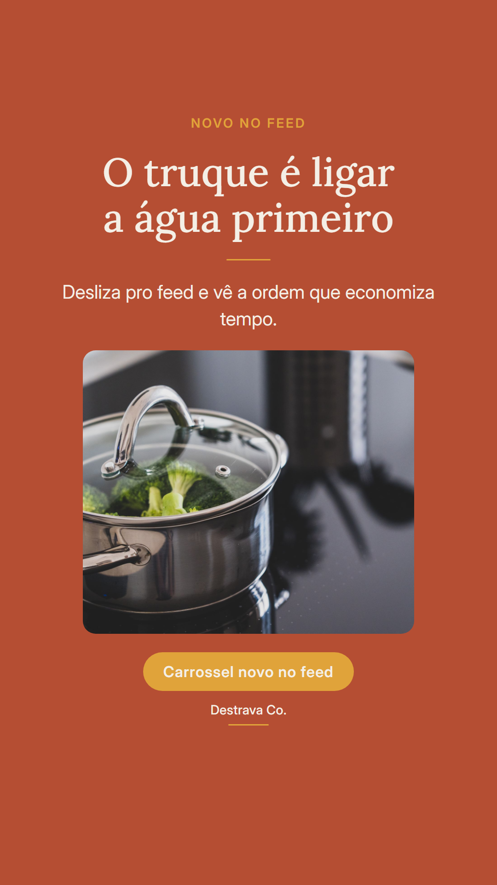

Ligar a água antes de abrir a geladeira muda o jantar inteiro.
Enquanto a panela esquenta, dá pra picar o que precisa, temperar a proteína e já deixar a frigideira no fogo. São minutos que normalmente passam em branco e que, bem usados, entregam o jantar quase montado.
Não é truque de chef, é ordem. Começar pelo que demora mais e encaixar o resto no meio tira aquela sensação de que cozinhar toma a noite toda.
Hoje pode ser macarrão com brócolis na mesma panela, arroz pronto com ovo mexido e tomate ou legumes na frigideira com frango em tiras.
Salva pra lembrar na correria e manda pra quem sempre chega em casa sem ideia. Se quiser, tem um PDF gratuito com 20 receitas de até 15 minutos esperando por você.